Расчет действующего значения выходного
напряжения
преобразователя в зависимости от формы сигнала
При использовании ветрогенераторов в качестве источника энергии необходимо иметь промежуточный накопитель энергии. Как правило, для этого используется аккумуляторная батарея с довольно низким выходным постоянным напряжением – 12 или 24 В. В то же время большинство потребительских нагрузок рассчитаны на подключение к сетям переменного тока напряжением 110 – 380 В частотой 45 – 65 Гц. Поэтому требуется преобразователь постоянного напряжения аккумуляторной батареи (наиболее распространены автомобильные аккумуляторы напряжением 12 В) в переменное напряжение (чаще всего 220 В 50 Гц) [1, 2].
Нагрузки, подключаемые в сеть переменного тока, могут не иметь блока питания и иметь индуктивный характер (вибрационный насос, электромагнит, электродвигатель) или резистивный характер (лампа накаливания, нагревательный прибор).
При наличии блока питания он может быть трансформаторным или бестрансформаторного типа.
Синусоидальная форма выходного сигнала преобразователя при малом коэффициенте гармоник соответствует паспортным требованиям нагрузок, подключаемых в сеть переменного тока, в частности, по соотношению амплитудного и действующего значений напряжения. Однако преобразователь с синусоидальной формой выходного сигнала сложен в конструировании и изготовлении. Желательно упростить преобразователь за счет использования других форм выходного сигнала, поняв условия, при которых такой преобразователь может использоваться для возможно большего количества типов нагрузок.
Форма выходного сигнала наиболее просто реализуемых преобразователей может быть прямоугольной, прямоугольной с паузой, трапецеидальной.
При этом возникает проблема выбора параметров сигнала, в частности, амплитудного значения напряжения. Для нагрузок с бестрансформаторным блоком питания, построенном по схеме выпрямитель-фильтр-преобразователь, максимальное амплитудное значение любого сигнала независимо от его формы может составлять 310 В, причем, как правило, это значение может быть существенно уменьшено.
Для нагрузок резистивного типа (ламп накаливания), рассчитанных на синусоидальное напряжение с действующим значением 220 В, амплитудное напряжение 310 В для сигнала прямоугольной формы без паузы является чрезмерным (действующее значение сигнала прямоугольной формы равно его амплитудному значению, в данном случае 310 В), и его необходимо уменьшить.
Рассмотрим случай трансформаторного блока питания. Полоса пропускания трансформаторов по частоте весьма широкая (до тысяч герц), поэтому напряжение на выходе трансформатора будет иметь прямоугольную форму. Так как стоящие дальше по схеме стабилизаторы рассчитаны на использование переменного напряжения с амплитудным значением (приведенным ко входу) 310 В, то применение прямоугольного напряжения с амплитудным значением 310 В будет перегружать трансформатор, а при меньших значениях амплитуды ухудшатся условия работы стабилизаторов.
Величину действующего напряжения для периодического сигнала Ud = U(t) с периодом T и круговой частотой w = 2p/T можно рассчитать по формуле:
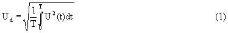
Для синусоидального сигнала с периодом T, круговой частотой w = 2p/T и амплитудным значением U0:
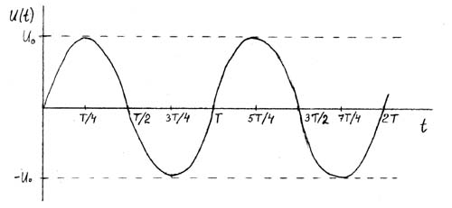
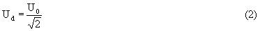
Для прямоугольного сигнала с периодом T, круговой частотой w = 2p/T и амплитудным значением U0:
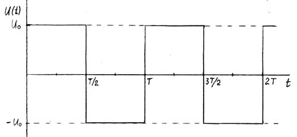
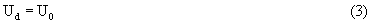
Для прямоугольного сигнала с паузой (период T, круговая частота w = 2p/T, длительность импульса положительной и отрицательной полярности t, длительность паузы T/2 – t) с амплитудным значением U0:
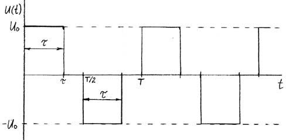
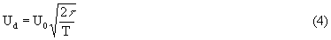
Для такого сигнала соотношение (2) достигается при t = T/4, т. е. длительность импульса с положительной полярностью и длительность импульса с отрицательной полярностью t должна быть равна половине полупериода, а длительность паузы должна быть равна длительности импульса t. При этом действующее значение напряжения Ud будет равно действующему значению напряжения синусоидального сигнала с такой же амплитудой.
Для трапецеидального сигнала с периодом T, круговой частотой w = 2p/T и амплитудным значением U0:
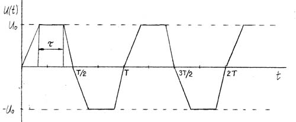
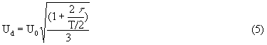
Здесь t – длительность вершины импульса.
При t = T/8 (четвертой части полупериода) действующее значение напряжения Ud будет таким же, как для случая синусоидального сигнала с такой же амплитудой U0:
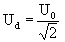
Принимая в качестве критерия соотношение для амплитудного и действующего значения выходного напряжения преобразователя как для случая синусоидального сигнала (2)
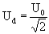
можно сделать вывод, что приемлемой формой выходного сигнала преобразователя является прямоугольная с паузой, когда длительность как отрицательного, так и положительного импульса равна длительности паузы (половина полупериода), или трапецеидальная, когда длительность плоской вершины импульса составляет четвертую часть полупериода. Выходной сигнал трапецеидальной формы предпочтительнее, так как коэффициент гармоник для него меньше.
Таким образом, возможно конструирование преобразователя с выходным сигналом трапецеидальной формы частотой 50 Гц, у которого длительность плоской вершины импульса составляет четвертую часть полупериода. Амплитуда выходного напряжения должна быть около 310 В. Действующее значение напряжения при этом будет равно 220 В. Такой преобразователь подходит по своим параметрам для большинства применяемых типов нагрузок.
Ссылки:
11.12.2003
12.01.2006
17.04.2006
17.06.2010
Альтернативные источники энергии
Компьютеры и
Интернет
Магнитные поля
Механотронные системы
Перспективные
разработки
Электроника и
технология